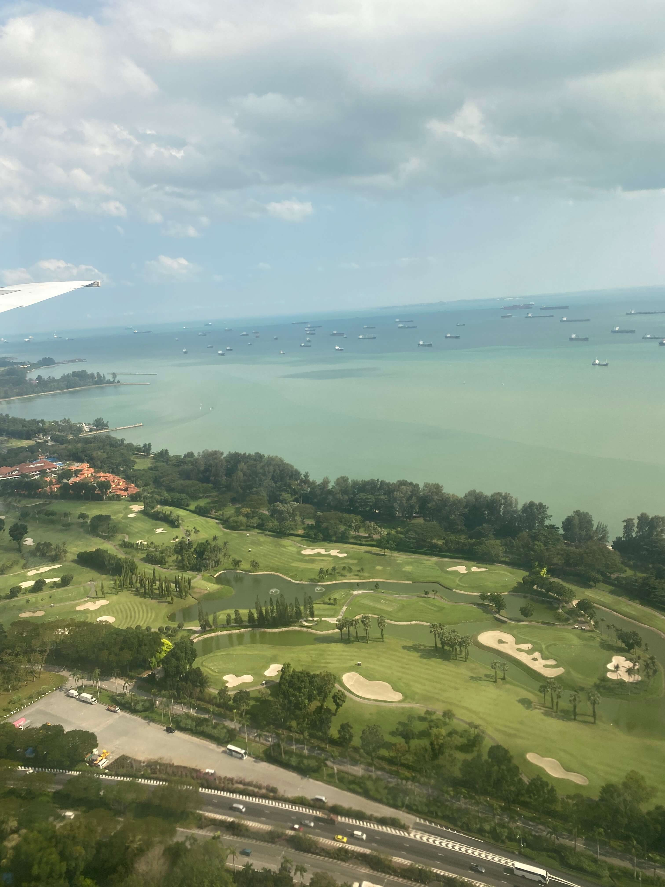

这是一篇流水账。
飞机上和我妈一起看《雨人》，阿汤的英俊和动人的故事都很引人入胜，不禁为雷蒙被自闭症掩盖的善良与对家人的爱感动得潸然泪下。
放几张靠近港口时拍摄的图片。

樟宜机场看着确实很高档，遍地绿化。由于集合时间紧凑，没看到著名的喷泉。来自马来西亚的学长学姐为我们接机，穿着打扮和国人相差不大，但气质不同，有东南亚特有的淳朴与活力。
大巴上看到了些有趣的事。
- 公路上大多是锃亮的轿车，几乎没有灰头土脸的私家车。好奇怎么做到的。
- 还有一些敞篷货车，后面坐的人全是深色人种，原因不明。
- 不久下起了阵雨，摩托车几乎全暂停路边，熟练地换上雨装，看来果然经常下雨。怪不得车都这么亮，天天洗天地澡堂。
- 很多建筑都有点粗野主义的味道，或者说像马赛公寓（Unité d'Habitation，又译居住单元）。
- 天气模型非常迷你，这边下着雨，那边天正晴。

我住在 Hall of Residence 3，在学校腹地，建筑嵌在山上，连栋楼之间楼层不一样。走廊里一路是拖鞋，看来新加坡人日常人字拖的传闻是真的。提前到的室友已经把房间收拾一遍了，好人，实在是好人。
从房间窗户往外看的景色大概是这样：
晚上在宿舍游荡，厨房角落突然窜出来一只壁虎：
除此之外，食阁里噪鹃四处游走，胆肥的甚至会跳上桌来讨饭吃，草丛不时会跳下一只花栗鼠，看得出来生态的确不错。
至于食物，的确和国内差远了。同等价位只能吃塑料米和各种看起来就不太健康的酱料调味的菜。荤菜大多鬼斧神工，切得那叫一个粗心大意；素菜基本没有，端得是二十新一盘炒豆角。顺带一提，这里咖啡普遍偏甜，如果你想在新加坡地地道道儿地点一杯少糖咖啡，就得说【Kopi Siew Dai】。周末在 ION Orchard 吃午饭，用五十新点了两个菜，米饭白水另算。味道的确不错，但确实有点贵。我爱吃，也乐意在吃上花点小钱，恐怕在这里想改善下伙食小钱就要变大钱了。
SAO 组织了 Singapore tour，导游是在 NUS 学史的，白天当导游，晚上玩乐队。众所周知客服就是客户服务工作，接受顾客咨询，帮顾客解答疑惑，那么导游也是客服。所以是丰川祥子带我们跑了一遍新加坡！ 具体去了什么地方我给忘了，反正就是 China town, Little India and Merlion 之类的。照片我也拍过，但懒得放上来了。
算了放几张

李伟南图书馆里全是理工教材，且大多上古珍本，封皮上是袭袭红尘阵阵古风。其中有本数据库相关教材比较有意思，就是下图里面的：
二次元真是无处不在啊
大概就这样吧。